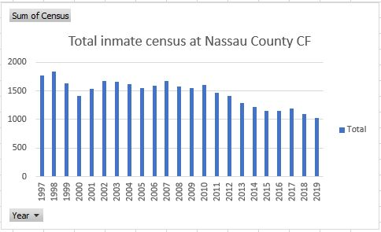

According to public data from the NYPD, the total census at the Nassau County CF showed a population of 1025 in 2019. In the same data table, a clear pattern is shown going back to 1997 that shows a steady population decrease year-by-year.
There are many potential reasons for the county prison to show a population decrease over the last two decades, from reassignment of inmates to a possible crime decrease in Nassau. However, other prisons have not shown a significant census increase in the last two decades. Suffolk County Correctional Facilities in Riverhead and Yaphank, for example, showed decreases or no significant change since 1997.
Nassau County CF is generally the highest-populated prison in New York, even after the 40% decrease. While its population has dipped to 1,025 at its lowest in 2019, most other institutions have never had more than 1,100 inmates in a year.
